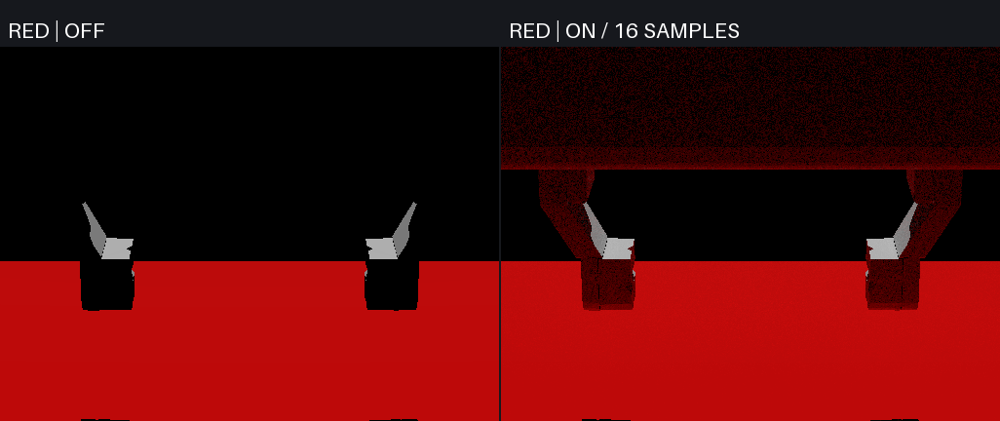

<!doctype html>
<html lang="zh-CN">
<meta charset="utf-8">
<meta name="viewport" content="width=device-width, initial-scale=1">
<title>红板能照红白色夹爪吗？ · Phymeo</title>
<style>
  :root { color-scheme:dark; background:#171a1c; color:#f3f2ee; font:16px/1.55 system-ui,sans-serif }
  main { max-width:1400px; margin:auto; padding:18px clamp(10px,2.7vw,38px) 32px }
  body, figure { margin:0 } a { color:#ade4f2 }
  nav, .controls { display:flex; flex-wrap:wrap; gap:12px 24px }
  h1 { font-size:clamp(1.6rem,3.8vw,2.6rem); line-height:1.25; margin:.65em 0 .25em }
  p, figcaption { color:#d3dadd }
  .controls { margin:1em 0; gap:9px 20px }
  fieldset { border:0; padding:0; margin:0; display:flex; align-items:center; gap:.3em }
  legend { float:left; padding:.28em .45em .28em 0 }
  label { padding:.2em .45em; border:1px solid #616b71; border-radius:.3em; cursor:pointer }
  label:has(input:checked) { border-color:#a4e2ed; color:#c3f3fa }
  input { accent-color:#90d7e5 }
  figure img { width:100%; height:auto; display:block; background:#111 }
  figcaption { margin:.55em 0 } footer { display:flex; gap:1.2rem; flex-wrap:wrap }
  @media(max-width:700px) { .controls { display:grid } }
</style>
<main>
  <nav><a href="../index.html">全部回放</a><a href="README.md">测量与复现</a></nav>
  <h1>红板能照红白色夹爪吗？</h1>
  <p>左边只有原来的照明，右边开启一次漫反射。先看两根白色指爪的背光面，再换成灰板，最后在红板上方加入遮光板。机位、白色涂层、直接光和曝光始终相同。</p>
  <form class="controls">
    <fieldset><legend>反光板</legend>
      <label><input type="radio" name="plate" value="red" checked> 红板</label>
      <label><input type="radio" name="plate" value="grey"> 同亮度灰板</label>
    </fieldset>
    <fieldset><legend>光路</legend>
      <label><input type="radio" name="block" value="open" checked> 敞开</label>
      <label><input type="radio" name="block" value="blocked"> 加黑色遮光板</label>
    </fieldset>
    <fieldset><legend>取景</legend>
      <label><input type="radio" name="zoom" value="roi" checked> 指爪局部</label>
      <label><input type="radio" name="zoom" value="full"> 整个摆台</label>
    </fieldset>
  </form>
  <figure>
    <a id="original" href="red-roi-pair.png"></a>
    <figcaption id="caption" aria-live="polite">红板敞开 · 指爪局部。左关右开，点击对照图可查看原尺寸。</figcaption>
  </figure>
  <footer><a id="left" href="red/none.png">关闭档全幅原图</a><a id="right" href="red/diffuse-bounce.png">开启档全幅原图</a><a href="overview.png">四组摆台总览</a></footer>
</main>
<script>
  const form = document.querySelector("form");
  function showComparison() {
    const options = new FormData(form);
    const plate = options.get("plate");
    const blocked = options.get("block") === "blocked";
    const detail = options.get("zoom") === "roi";
    const phase = plate + (blocked ? "-blocked" : "");
    const file = phase + (detail ? "-roi-pair.png" : "-pair.png");
    const description = (plate === "red" ? "红板" : "同亮度灰板")
      + (blocked ? "加黑色遮光板" : "敞开") + " · " + (detail ? "指爪局部" : "整个摆台");
    const image = document.querySelector("#pair");
    image.src = file;
    image.alt = description + "，左关右开";
    document.querySelector("#caption").textContent = description + "。左关右开，点击对照图可查看原尺寸。";
    document.querySelector("#original").href = file;
    document.querySelector("#left").href = phase + "/none.png";
    document.querySelector("#right").href = phase + "/diffuse-bounce.png";
  }
  form.addEventListener("change", showComparison);
  showComparison();
</script>
</html>
